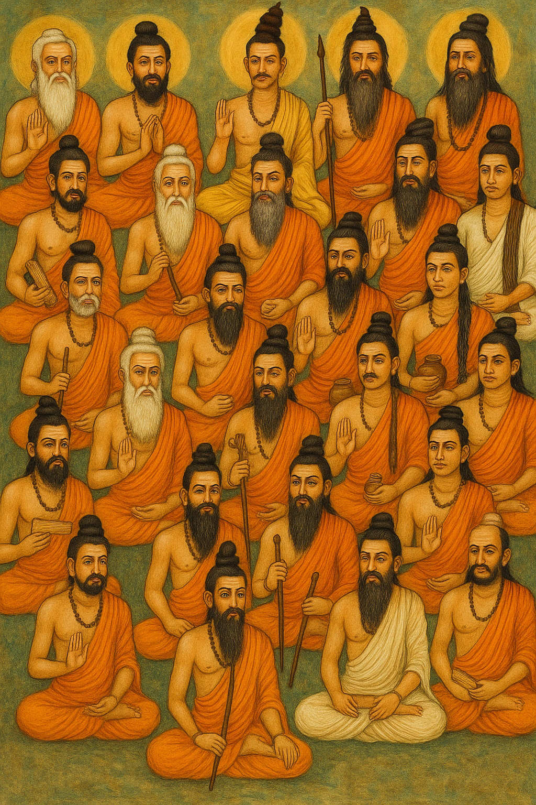

Siddha philosophy perceives the human body as a microcosm of the universe ("Yatha Andam, Thatha Pindam"). The same elements and forces that govern the cosmos are reflected within us. This interactive model illustrates the magnificent harmony of our solar system—a reminder of the universal balance Siddha strives to achieve within each individual. Click and drag to explore, click on the Sun to learn more about the cosmic connection in Siddha philosophy.

About
About
Siddha Knowledge
& Practices
Ancient Wisdom. Modern Wellness
Understanding Siddha
The Siddha system is one of the oldest traditional medical systems in the world, originating in Tamil Nadu, South India. The term "Siddha" derives from the Sanskrit root siddh, meaning "to accomplish" or "attainment," and refers to the perfected sages known as Siddhars who developed this profound system.
Rooted in ancient Tamil culture and philosophy, Siddha medicine views the human body as a microcosm of the universe, composed of the five primordial elements (Pancha Bhootas) and governed by three humors (Tridoshas: Vatham, Pitham, Kabam). Health is considered a state of equilibrium among these elements and humors, while disease arises from their imbalance.
The Siddhars were not just physicians but also yogis, mystics, and alchemists who, through intense meditation (yogam), breath control (pranayamam), and mastery over nature, attained extraordinary powers (siddhis) and deep insights into health, longevity, and spiritual realization. Their knowledge, passed down through generations, forms the basis of Siddha medicine today.
A Glimpse into History
The origins of Siddha are traditionally attributed to the primordial Guru, Lord Shiva, who imparted this divine knowledge to his consort Goddess Parvati, who then passed it to Nandi Devar, and subsequently to the lineage of 18 esteemed Siddhars (Pathinen Siddhargal). Agastya Muni is considered the foremost among the Siddhars and the father of Siddha medicine.
Ancient Tamil literary works like Tholkappiyam and texts from the Sangam period contain references to Siddha practices. Siddhars like Tirumular (author of Tirumandiram) documented profound knowledge about yoga, medicine, alchemy, and philosophy, often inscribed on palm leaves. This knowledge system flourished in the Tamil-speaking regions of Southern India and Sri Lanka for millennia.
Loading Cosmic Model...
Core Principles
Pancha Bhootas (Five Elements)
Universe and body are composed of Earth (Mann), Water (Neer), Fire (Thee), Air (Kaatru), and Ether/Space (Aagayam).
Tridoshas (Three Humors)
Life functions governed by Vatham (Air/Ether - movement), Pitham (Fire/Water - transformation), and Kabam (Earth/Water - structure).
Aru Suvai (Six Tastes)
Tastes (Sweet, Sour, Salty, Bitter, Pungent, Astringent) influence Doshas and bodily functions.
Nadi Pariksha (Pulse Diagnosis)
A sophisticated method to assess the balance of Tridoshas by feeling the pulse at the wrist.
Holistic Approach
Focuses on treating the root cause, considering body, mind, spirit, environment, and lifestyle.
Kayakarpa
Specialized rejuvenation therapies (using herbs and minerals) aimed at longevity and vitality.
The Siddha Philosophy
The ultimate goal of the Siddha path extends beyond merely curing disease. It aims for longevity (neenda aayul), maintaining health throughout life, and ultimately, achieving spiritual enlightenment or liberation (mukthi). The Siddhars believed that a healthy body is essential for a clear mind and spiritual progress.
Practices like yoga, pranayama (breathing techniques), meditation, specialized dietetics, and the use of potent herbal, mineral, and metallic preparations (parpam, chendooram) are integral to achieving this holistic-well being and harmony between the individual and the cosmos.